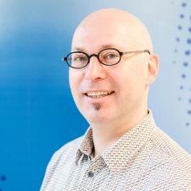

tim.froidcoeur@email.com
mobile: +32 479 92 09 09
Nationality: Belgian
# Summary
I am a Senior Embedded Software Developer coming from dynamic high-tech
environments where I am effectively using my technical skills in roles
of software architect or software developer. I value constant learning
and the possibility of working with new technologies, languages,
environments, people. It is important to me to be able to make a sizable
contribution and have a clear impact on customers, colleagues and
projects.
A positive team spirit and sense of a common goal makes me thrive in my
job.
## Core Competencies
- Fast-learner, flexibility
- Analytical mind: problem-solving
- Team player
- Enthusiastic
- Software architecture, engineering and programming.
- Solution builder, using whatever is needed
- Social, outward-bound
## Skills & Tools
### Programming Languages
- Java, C, bash script, Python, C++
- some Groovy, Scala, Perl, Lua, PHP
- assembler (Real16, EPICS7, ARM)
### Platforms
- X86, ARM, Trimedia, Real16, MIPS
- Qualcomm MDM6200, MDM9x15,
- TI AM335x (beaglebone)
- NXP LPC ARM7/Cortex-M3 family
### OS
- Linux, Windows, PSoS, RTK, L4/Rex
### Tools
- Visual studio
- make, ant
- gcc, armcc
- javac, WTK (J2ME) toolchain
- Cygwin and MinGW toolchain on windows
- git, git svn, subversion, perforce
- Jenkins CI
- Lauterbach T32 debugging, gdb, jdb
- Wireshark network analyser
- LeCroy CATC USB analyser
- Qualcomm QXDM
- Eclipse (JDT, CDT, MTJ, JCOP, WTP), vi
### Technologies
- TLS (SSL)
- GNSS technologies (GPS/Glonass/Galileo)
- TCP/IP, Ipv6, HTTP, CSS, HTML, UPnP
- Mobile Communication systems (2G/3G/LTE)
- USB: CDC/ACM, Audio, MTP
- IoT: ZWave, DECT ULE
- NFC, RFID
- applied security and cryptography
- SQL
### Java technologies
- J2ME (CDC/Foundation, CLDC/ MIDP), J2SE, J2EE (tomcat)
- Java SE embedded 8
- JSSE, JCE
- JNI, KNI, JIT, Garbage Collector
- Sun VM, J9 VM, Wonka VM
- Java Card and JCOP
## Employment
### SoftAtHome, Wijgmaal,Belgium From May 2015
**Consultant**
Software architect and developer for the SoftAtHome home automation
solution. One aspect of my role involves implementation and maintenance
of a number of home automation software components for the SoftAtHome
home gateway software stack. The other half of my time is dedicated to
the following up the architecture of the complete home automation
solution.
### Essensium – Mind, Leuven, Belgium From May 2015
**Senior Embedded Software Developer**
Part of a SW development team that provides consultancy and services in
the field of Linux and Open Source Software for Embedded Systems (mainly
Embedded Linux, μClinux, Android, RTEMS, eCos, FreeRTOS, Qt, GStreamer,
etc…). Typical projects cover: Feasibility studies and Prototyping,
Kernel configuration, Low-level development (Boot-loaders, device
drivers, BSPs, etc…), Firmware development (Networking and protocol
stacks, Multimedia libraries, GUIs, Security, etc…) and Application
development for Embedded Systems.
### Telit Automotive Solutions, Leuven, Belgium Apr 2014 – May 2015
Software architect and senior SW developer
The ATOP business was acquired by Telit in Apr 2014, forming the core
of Telit's new automotive business unit.
Next to continued responsibilities for the 3G ATOP development, I am the
software architect for the 4G platform. A dual-core based system with a
dedicated application processor running embedded Linux. Java SE 8
Embedded was selected as the successor to the aging CDC/Foundation
profile JVM. Next to defining the Linux/Java software environment, I
function as the external and internal interface for the SW requirements,
I am responsible for coaching the 4G SW team.
Next to my role as software architect for the 4G, I also have an active
SW developer role in the 4G project.
NXP, Leuven, Belgium 2007 - Apr 2014
### Software architect and senior SW developer for Telematics
The multi-site Telematics project was an opportunity for me to apply and
extend my expertise in Java, embedded development and TCP/IP. I
contributed to the software study, architecture, design and
implementation of the 2.5G, 3.5G and 4G flavors of ATOP.
I joined the project in the early design phase of the 2.5G ATOP, working
on the software architecture and feasibility studies of ATOP; ATOP is an
embedded Java platform (CDC) integrating, GPS, GSM baseband and security
module. I interacted with partners and customers to capture the
requirements.
As the project evolved into product development, I added the role of
lead Java developer to my role of software architect and made
substantial contributions to the C porting layer of the java JVM.
In this mixed role, I defined most of the Java APIs for the platform,
implementing a number of them; I assisted in the port of the IBM JVM
onto the ARM platform and RTK OS, implementing a substantial part of the
native interfaces (JNI).
I have also been the developer of essential functionality as the GPS
API, the ROM file system and it's integration in the OS and the USB host
CDC/ACM functionality.
Next to these main tasks, I coached junior developers and set up the
(initially ant based) build environment.
I also took the initiative – first as a personal hobby project – to
create and maintain a server for visualizing the GPS position and status
of active ATOP modules in Google Earth and Google Maps (Ubuntu/tomcat
based). This became a crucial test, demonstration and validation tool
for all ATOP products.
For the 3G ATOP flavor, I was responsible for the GNSS Java API
integration and the port and integration of a native TLS stack into the
JVM (JSSE). I also integrated a number of native (C code) crypto
primitives into JCE.
Additionally, I also started and nurtured a number of improvement
initiatives. Under my impulse, systematic reviews are held of every Java
API change before being released to customers. I have been driving the
project towards a common code source for all ATOP variants, allowing
reuse of already-developed components between ATOP family members.
### NXP, Leuven, Belgium 2006 - 2007
Software architect and senior SW developer
The NFC demonstrators project at NXP Leuven was set up to create
compelling demonstrators for the NXP product portfolio in contactless
security and NFC specifically.
These demonstrators often used various mobile phone prototypes with NFC
functionality and interacted with different types of contactless
technologies.
The fundamental building blocks for many of these demos were a flexible
set of J2ME MIDlets and libraries, a MFC based PC application and
various ad-hoc pieces of equipment, smartcards, customer hardware and
software.
For this team I was the software and system architect and single Java
developer. I designed numerous demonstrators used at several
exhibitions.
The challenge in this project was to maximize the result with given
resources, trying to optimally satisfy internal and customer requests
for marketing demonstrators, various prototypes and feasibility studies.
I gained expertise in combining different technologies and tools in an
effective way to achieve maximum results.
### Philips Applied Technologies, Leuven, Belgium 2004 - 2006
Software architect and senior SW developer
In this period I grew beyond the role of developer. Next to substantial
development responsibilities, I often defined the direction of a project
as one of the software architects and lead developers.
This role I played in the Blu-ray Java middleware product development,
where I was responsible for the design of part of the native interface
layer that hooked up the CDC Java environment to the underlying system.
I also was key in the realization of the consumer electronics island for
the “Next Simplicity” events in several international cities, showcasing
Philips' vision of the future.
Here we managed to create functional implementations in a short timespan
byusing the flexibility of embedded Linux and Java and mixing in
suitable technology from a host of internal and external suppliers.
I had the technical lead as the architect of a team implementing a
prototype of the Microsoft DRM system on an embedded Linux car
entertainment platform.
During my whole career at Philips, but more specifically during this
time, I regularly traveled internationally for meetings, showcases at
various fairs and technical support.
### Philips Applied Technologies, Leuven, Belgium 2000 - 2004
**Embedded Software developer**
In this period I oriented myself towards embedded software development
and expanded my technical skills in C and C++ programming, MFC, TCP/IP
networking, XML, UPnP, NFC and various other technologies.
I was primarily involved in the realization of advanced development
projects for Philips Consumer Electronics, focusing on what became the
“Connected Planet”. This was a visionary dream of Internet connected CE
appliances seamlessly interacting with each other.
Our team created proof-of-concept demonstrators for Internet connected
radios and Wi-Fi enabled smart remote controls; these demonstrators were
a hit at various trade shows like CeBit, CES and IFA.
As an extension of this prototyping work, I lead a small team to mature
parts of the technologies into a number of products.
Next to this, I worked with various technologies, through projects as
diverse as
- development and support of a Windows filter driver integrating a variety of
audio algorithms for USB speaker sets.
- audio over Bluetooth evaluation, where I developed software tools for
evaluating Bluetooth signal strength, throughput and latency in different test
environments.
### Philips International Technology Center, Leuven, Belgium 1998 - 2000
**DSP Software developer**
Having completed my studies, I was keen to expand my neglected love for
software development. I had the unique opportunity of learning this on
the job, by starting in DSP development at Philips.
I worked on implementation of different audio algorithms on Philips DSP
hardware. My tasks ranged from feasibility studies, over Matlab modeling
of audio algorithms to low-level assembly programming on extremely
resource limited DSP hardware. These algorithms include Acoustic Echo
Cancellation, Noise Suppression and beamforming.
## Education
### Master in Electrical Engineering, KU Leuven 1993 – 1998
Master thesis “DSP implementation of wavelet based digital signal
processing algorithms.”
### College: Latin-Mathematics, Sint-Jozef-Klein-Seminarie, Sint-Niklaas 1987 – 1993
### Trainings and Certifications
- Linux Kernel and Device Driver Development (Essensium - Mind) 2015
- Embedded Linux Development course (Essensium - Mind) 2015
- Stanford University Compilers course through Coursera 2014
- Sun Certified Java Programmer 2005
- Sun Certified Mobile Application developer 2006
- Red Hat Linux Programming essentials (RHD143) 2003
- Red Hat Linux Device Drivers (RHD221) 2003
- Structured Analysis and Structured Design of Real-Time Systems 2002
- Object Oriented Analysis and Design 2002
- Mobile Communication using 2G/3G and LTE (JCA) 2011
- IPv6 Explained (JCA) 2013
- Fire Safety (Idewe) 2011
### Languages
Fluent in Dutch, French and English.